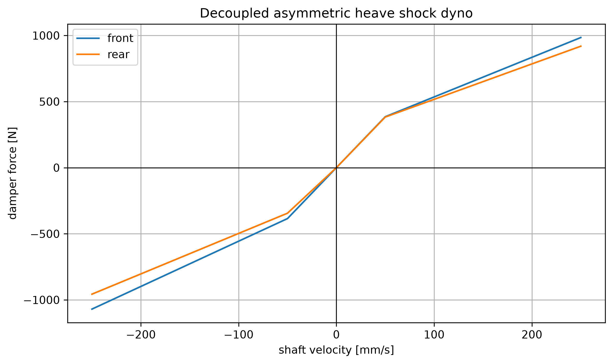
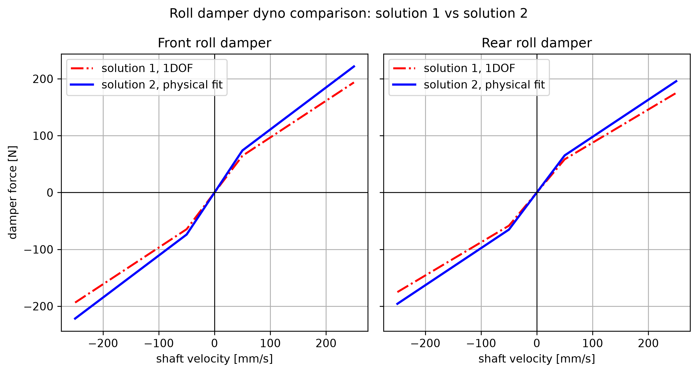
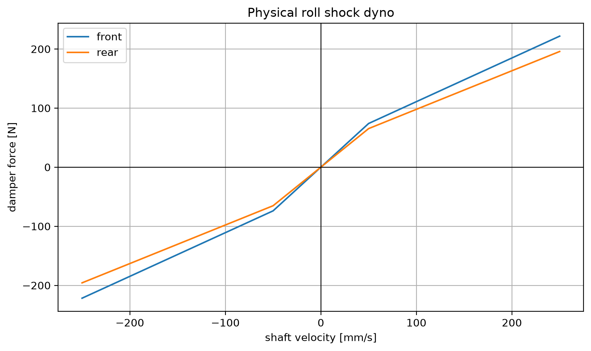
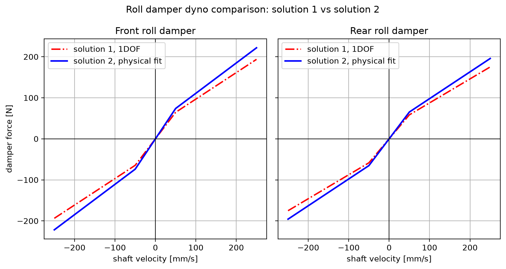

將目標阻尼比轉換為 damper force-velocity 曲線。Heave 使用非對稱壓縮／回彈曲線；roll damper 比較 physical fit 與 1DOF sizing。
| category | name | number |
|---|---|---|
| 導出量 | hl_heave_damper_front_force_250_mm_s_n | 984.2655972405764 |
| 導出量 | hl_heave_damper_rear_force_250_mm_s_n | 918.6301704393843 |

| axle | low_bump_n_per_mm_s | low_rebound_n_per_mm_s | high_bump_n_per_mm_s | high_rebound_n_per_mm_s | knee_velocity_mm_s |
|---|---|---|---|---|---|
| front | 7.702948152317555 | 7.702948152317555 | 2.9955909481234935 | 3.4235325121411355 | 50.0 |
| rear | 7.655251420328203 | 6.889726278295383 | 2.679337997114871 | 3.0621005681312816 | 50.0 |
共 41 筆資料；完整數據請開啟 CSV。
共 501 筆資料；完整數據請開啟 CSV。
| category | name | number |
|---|---|---|
| 導出量 | hl_roll_damper_front_physical_low_ns_per_m | 1478.2900127333573 |
| 導出量 | hl_roll_damper_rear_physical_low_ns_per_m | 1305.1659180249644 |



| axle | low_bump_n_per_mm_s | low_rebound_n_per_mm_s | high_bump_n_per_mm_s | high_rebound_n_per_mm_s | knee_velocity_mm_s |
|---|---|---|---|---|---|
| front | 1.2909589726920534 | 1.2909589726920534 | 0.6454794863460267 | 0.6454794863460267 | 50.0 |
| rear | 1.1678037354470903 | 1.1678037354470903 | 0.5839018677235451 | 0.5839018677235451 | 50.0 |
| axle | low_bump_n_per_mm_s | low_rebound_n_per_mm_s | high_bump_n_per_mm_s | high_rebound_n_per_mm_s | knee_velocity_mm_s |
|---|---|---|---|---|---|
| front | 1.4782900127333574 | 1.4782900127333574 | 0.7391450063666787 | 0.7391450063666787 | 50.0 |
| rear | 1.3051659180249644 | 1.3051659180249644 | 0.6525829590124822 | 0.6525829590124822 | 50.0 |
| category | name | number |
|---|---|---|
| 輸入量 | ms | 260.0 |
| 輸入量 | mu | 15.0 |
| 輸入量 | MR | 1.0 |
| 輸入量 | Kt | 80000.0 |
| 輸入量 | L | 1.53 |
| 輸入量 | t | 1.25 |
| 輸入量 | h_cog | 0.3 |
| 輸入量 | ax | 2.0 |
| 輸入量 | ay | 2.0 |
| 輸入量 | Ks_pitch_N_per_m | 140872.29401066582 |
| 輸入量 | Ks_roll_N_per_m | 86431.62256800188 |
| 輸入量 | hl_front_weight_ratio | 0.5 |
| 輸入量 | hl_rear_track_m | 1.24 |
| 輸入量 | hl_front_roll_center_m | 0.025 |
| 輸入量 | hl_rear_roll_center_m | 0.05 |
| 輸入量 | hl_sprung_roll_inertia_kg_m2 | 45.0 |
| 輸入量 | hl_rear_heave_spring_ratio | 0.8 |
| 輸入量 | hl_rear_roll_spring_ratio | 0.75 |
| 輸入量 | hl_front_roll_motion_ratio | 1.0 |
| 輸入量 | hl_rear_roll_motion_ratio | 1.0 |
| 輸入量 | hl_front_independent_motion_ratio | 0.5 |
| 輸入量 | hl_rear_independent_motion_ratio | 0.5 |
| 輸入量 | hl_front_heave_low_bump_zeta | 0.9 |
| 輸入量 | hl_front_heave_low_rebound_zeta | 0.9 |
| 輸入量 | hl_front_heave_high_bump_zeta | 0.35 |
| 輸入量 | hl_front_heave_high_rebound_zeta | 0.4 |
| 輸入量 | hl_rear_heave_low_bump_zeta | 1.0 |
| 輸入量 | hl_rear_heave_low_rebound_zeta | 0.9 |
| 輸入量 | hl_rear_heave_high_bump_zeta | 0.35 |
| 輸入量 | hl_rear_heave_high_rebound_zeta | 0.4 |
| 輸入量 | hl_front_roll_low_zeta | 1.0 |
| 輸入量 | hl_front_roll_high_zeta | 0.5 |
| 輸入量 | hl_rear_roll_low_zeta | 1.0 |
| 輸入量 | hl_rear_roll_high_zeta | 0.5 |
| 輸入量 | hl_knee_velocity_mm_s | 50.0 |
| 輸入量 | hl_acceleration_g | 1.2 |
| 輸入量 | hl_reference_case_g | 1.0 |
| 輸入量 | hl_heave_damper_front_force_250_mm_s_n | 984.2655972405764 |
| 導出量 | hl_roll_damper_front_physical_low_ns_per_m | 1478.2900127333573 |
| 導出量 | hl_roll_damper_rear_physical_low_ns_per_m | 1305.1659180249644 |
| case | front_linear_damping_n_s_per_m | rear_linear_damping_n_s_per_m | fit_error_frobenius | relative_fit_error |
|---|---|---|---|---|
| low | 1478.2900127333573 | 1305.1659180249644 | 2157.3077924662875 | 0.3009778567774271 |
| high | 739.1450063666787 | 652.5829590124822 | 1078.6538962331438 | 0.3009778567774271 |
共 501 筆資料；完整數據請開啟 CSV。